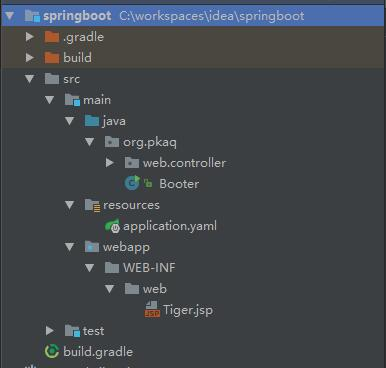

采用Gradle快速构建基于Spring boot的MVC应用
Spring boot是用以简化Spring配置开发的一枚框架，采用Spring boot可以抛弃繁琐的XML配置，采用JavaConfigure的方式进行快速配置。同时该框架提供了包含预配置的众多的starter可以极大的简化配置工作量。下面的代码便是采用web-starter和Gradle进行快速创建一个mvc应用的示例。
目录结构 
引入依赖 1
2
3
4
5
6
7
8
9
10
11
12
13
14
15
16
17
apply plugin: "war"
ext {
bootVersion = "1.4.2.RELEASE"
tomcat_embed = "8.5.4"
}
repositories {
maven { url"https://repo.spring.io/libs-release" }
jcenter()
mavenCentral()
}
dependencies {
compile "org.springframework.boot:spring-boot-starter-web:${bootVersion}" ,
"org.apache.tomcat.embed:tomcat-embed-jasper:${tomcat_embed}"
}
个性化配置 如果你采用的是标准目录结构，那么可以通过在src/main/resources下创建application.yaml文件对预配置项进行修改，无论是在IDEA还是在STS中，编辑此文件输入spring.都会有相应的代码提示，相关配置项的名字基本也是见名知意，大家可以自己去体会一下。当然你也可以ctrl+click查看下源码做深入了解。1
2
3
4
5
6
spring:
mvc:
date-format: yyyy-MM-dd
view:
prefix: /WEB-INF/web/
suffix: .jsp
启动类配置 1
2
3
4
5
6
7
8
9
10
11
12
13
14
15
@SpringBootApplication
public class Booter implements CommandLineRunner
@Autowired
public static void main (String[] args)
SpringApplication.run(Booter.class, args);
}
public void run (String... args) throws Exception
System.out.println(" --- --- --- [ web started ] --- --- --- " );
}
}
一个示例controller 这里需要注意，如果没有配置 ComponentScan 指定扫描的包，controller 应该放在启动类的同级或者子包下，否则无法扫描到相应的Bean。1
2
3
4
5
6
7
@Controller
public class TigerController
@RequestMapping ("/tiger" )
public ModelAndView tiger ()
return new ModelAndView("Tiger" ,"tigerName" ,"Scott" );
}
}
view页面 无他，JSP尔。1
2
3
4
5
6
7
8
9
<%@ page contentType="text/html;charset=UTF-8" language="java" %>
<html>
<head>
<title>Hello Spring MVC</title>
</head>
<body>
Tiger's name is : ${tigerName}
</body>
</html>